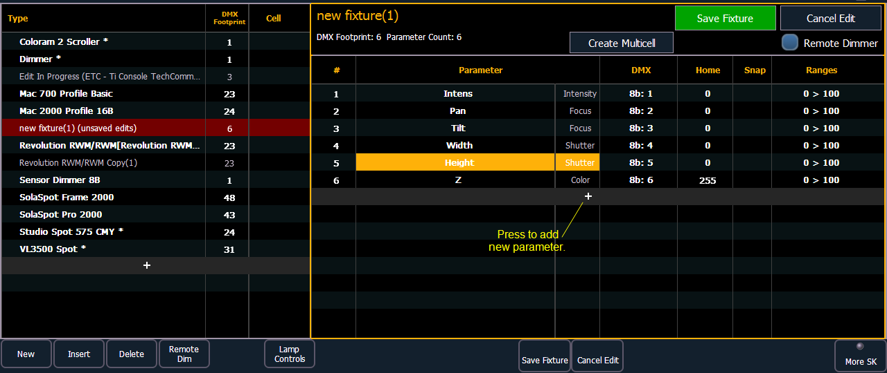
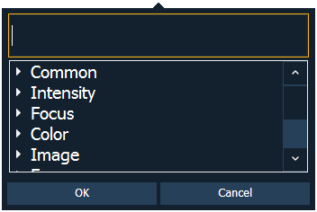
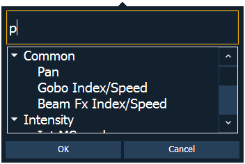
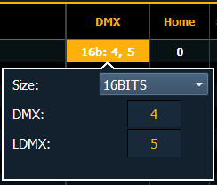

New fixtures are created from the fixture editor. You can either create a new fixture, or copy an existing fixture to edit. See Copying a Fixture
To create a new fixture, press {New}. A new fixture will be added to the fixture list.
Once the new fixture appears in the list, it is recommended that you name the fixture you are about to create.
To name a fixture in the creator list:
After naming the fixture, you can specify which parameters the new fixture contains.
Note: For 16b parameters, LDMX or “low-DMX” is the DMX address for the second half of any 16-bit channel. If used in Coarse/ Fine determination, the DMX channel defines the “Coarse” adjustment and the LDMX defines the “Fine” adjustment. Do not count 16-bit parameters as two parameters, this will be done in a later step.
To add parameters to a new fixture:

Note: When {New} or {+} is pressed, the parameter slot will appear in the list with a default name in the “Parameter” column. You may disregard these default parameters as you will redefine the designations in a later step.


If you are missing a parameter slot: At any point you can use the [Page] keys and {Insert}, to insert a parameter slot above the selected one.
If you want to remove a parameter: you can use the [Page] keys and {Delete}, to remove a parameter from the list.
A parameter can be assigned as a locked value. When used, the output address and value will be locked at the profile level. This option is available under Control in the parameter dropdown list.
Once you have added and specified all of the parameters for the new fixture, you can now define the address requirements, size, and ranges for each of them.
To define the size (8-bit or 16-bit), DMX address, and LDMX address of any parameter:

You can alter the default DMX address assigned to any parameter in the list. This is not the actual address that will be used when patched, but rather it is the order of address for the parameter relative to the other parameters in the fixture.
LDMX or “low-DMX” is the DMX address for the second half of any 16-bit channel. If used in Coarse/ Fine determination, the DMX channel defines the “Coarse” adjustment and the LDMX defines the “Fine” adjustment.
To alter the Home settings for any parameter:
You can define the value for any parameter’s “home” value.
To enable the Snap setting for parameters:
You can enable snap for parameters to exempt them from cue timing, so they snap to their new value. For more information about snap, see Snap Parameters